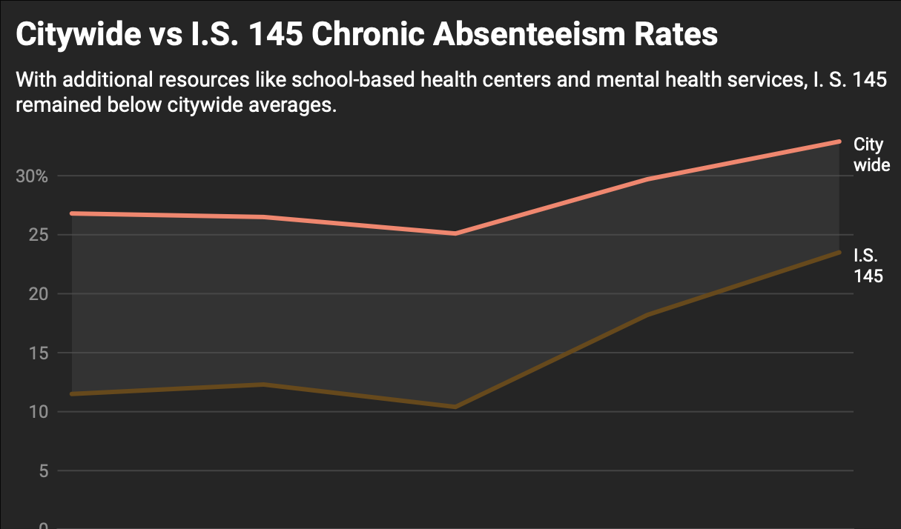
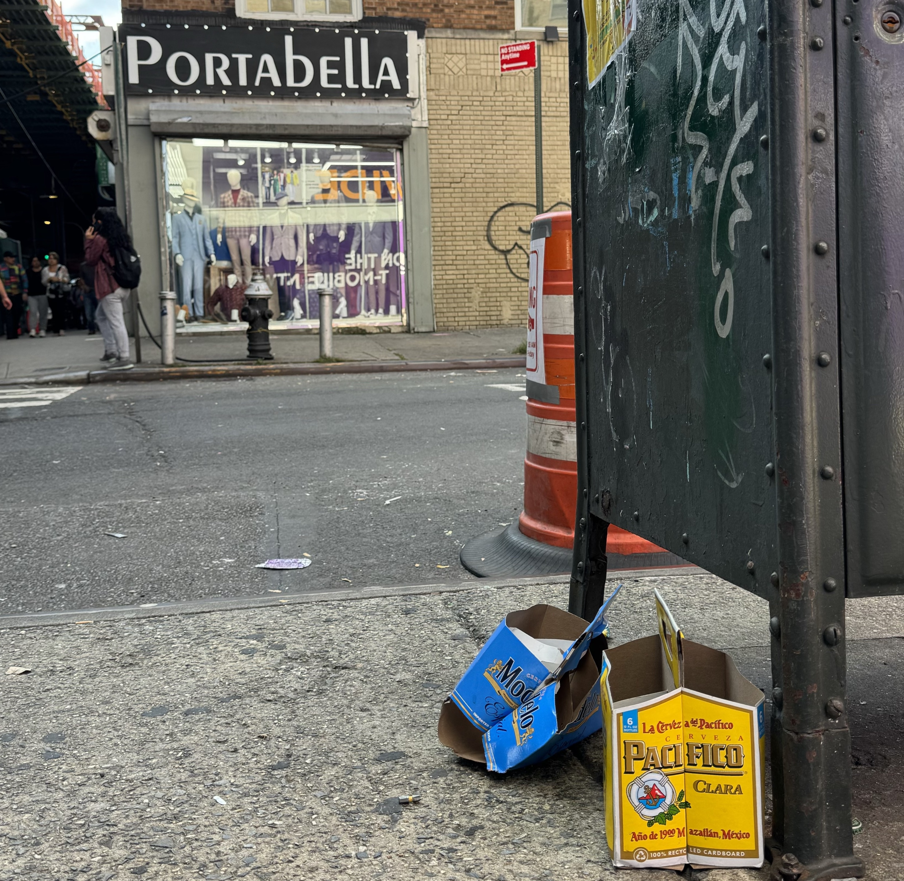
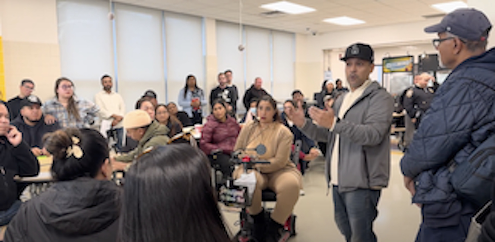
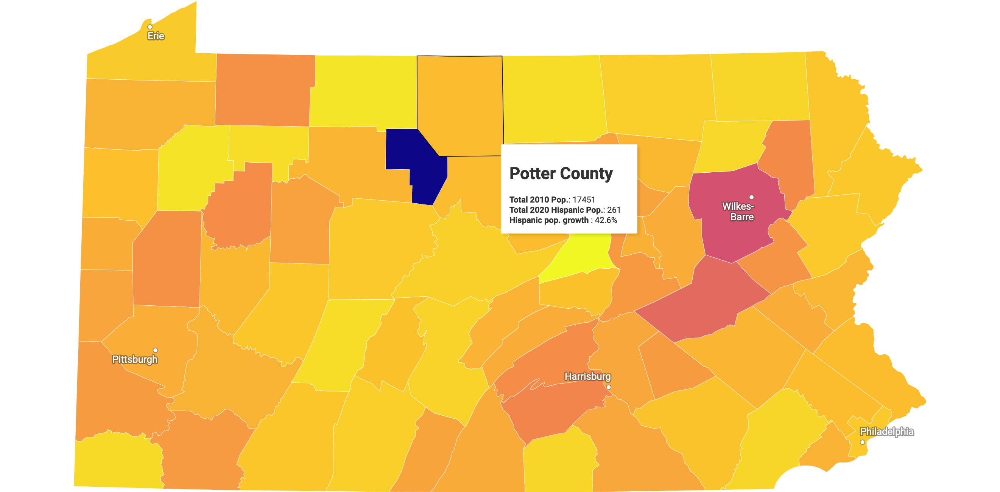

Hello Revson Fellowship Judges
Welcome to my first semester portfolio. Here you'll find assignments completed in my Introduction to Data Journalism class. And clips highlighting education and city accountabilty reporting from my other courses and work as a stringer.
Coverage of a CUNY PSC rally outside of Brooklyn's Borough Hall.

Data assignment 2: The sudden closure of a Gotham Health Clinic inside of I.S. 145 in Jackson Heights. As part of the project I created a series of charts to highlight chronic absenteesim rates and access to health insurance. For many children at I.S. 145, this clinic was their only access point to reliable health care.

Data assignment 1: Found PNG files and added those files to HTML code to support story about post-9/11 WTC related deaths in the FDNY.

NYCNews Service story about the death of Kawaski Trawick.

The 110th and 115th precincts atop citywide list for drinking in public summonses.

Embattled principal failed to promptly notify parents about a knife brought to school.

In-class data assignment: Cloropleth map showcasing percentage increase in Hispanic population in Pennsylvania.
Author page for work published as a runner/reporter for the New York Post.


{kind=link}
{kind=link}
{kind=link}
{kind=link}
{kind=link}
{kind=link}
{kind=link}